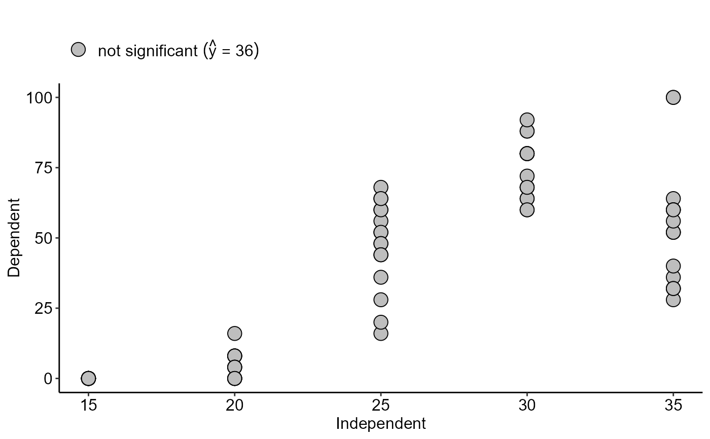

Nreg.RdGraph for non-significant trend. Can be used within the multicurve command
Nreg(
trat,
resp,
ylab = "Dependent",
xlab = "Independent",
error = "SE",
theme = theme_classic(),
legend.position = "top",
legend.text = "not~significant",
legend.add.mean = TRUE,
legend.add.mean.name = "hat(y)",
width.bar = NA,
point = "all",
textsize = 12,
add.line = FALSE,
add.line.mean = FALSE,
linesize = 0.8,
pointsize = 4.5,
pointshape = 21,
fillshape = "gray",
colorline = "black",
fontfamily = "sans"
)Numeric vector with dependent variable.
Numeric vector with independent variable.
Dependent variable name (Accepts the expression() function)
Independent variable name (Accepts the expression() function)
Error bar (It can be SE - default, SD or FALSE)
ggplot2 theme (default is theme_classic())
legend position (default is "top")
legend text
Add average in legend
Add media name
Bar width
defines whether you want to plot all points ("all") or only the mean ("mean")
Font size
Add line
Add line mean
line size
shape size
format point (default is 21)
Fill shape
Color lines
Font family
The function returns an exploratory graph of segments
library(AgroReg)
data("aristolochia")
attach(aristolochia)
#> The following objects are masked from aristolochia (pos = 3):
#>
#> resp, trat
#> The following objects are masked from aristolochia (pos = 9):
#>
#> resp, trat
#> The following objects are masked from aristolochia (pos = 10):
#>
#> resp, trat
#> The following objects are masked from aristolochia (pos = 11):
#>
#> resp, trat
#> The following objects are masked from aristolochia (pos = 17):
#>
#> resp, trat
#> The following objects are masked from aristolochia (pos = 18):
#>
#> resp, trat
#> The following objects are masked from aristolochia (pos = 23):
#>
#> resp, trat
#> The following objects are masked from aristolochia (pos = 24):
#>
#> resp, trat
#> The following objects are masked from aristolochia (pos = 25):
#>
#> resp, trat
#> The following objects are masked from aristolochia (pos = 27):
#>
#> resp, trat
#> The following objects are masked from aristolochia (pos = 28):
#>
#> resp, trat
#> The following objects are masked from aristolochia (pos = 30):
#>
#> resp, trat
Nreg(trat,resp)
#> $teste
#> [1] "not significant"
#>
#> [[2]]

#>